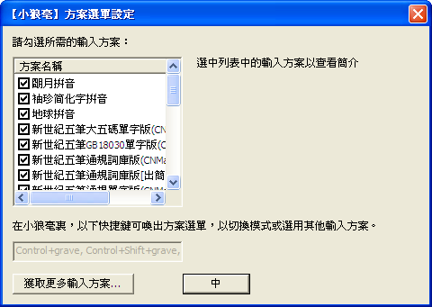
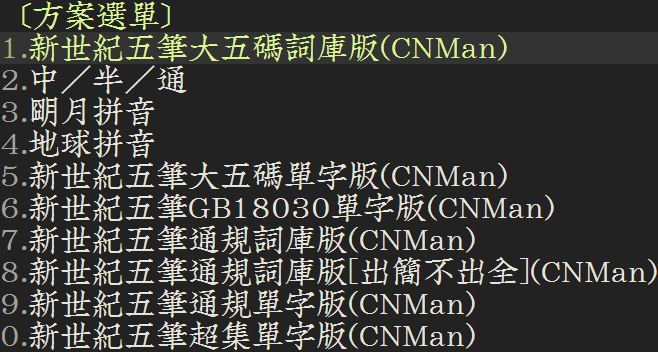

重要常识
- 共享文件夾
- 小狼毫：
<安裝目錄>\data
- 鼠鬚管：
/Library/Input Methods/Squirrel.app/Contents/SharedSupport
- 中州韻：
/usr/share/rime-data
- 用戶文件夾
- 小狼毫：
%APPDATA%\Rime
- 鼠鬚管：
~/Library/Rime
- 中州韻：
- ibus-rime:
~/.confg/ibus/rime
- fcitx-rime:
~/.confg/fcitx/rime
Rime是跨平台的输入法引擎，也是后端算法框架；前端在Linux系统中叫“中州韵”、在macOS系统中叫“鼠须管”、在Windows系统中叫“小狼毫”、在Android系统中叫“同文”、在iOS系统中叫“iRime”，故以下统称“Rime输入法”。
中州韵（Linux）、鼠须管（macOS）、小狼毫（Windows）、同文（Android）、iRime（iOS）等“Rime输入法”的码表通用，故以下统称“Rime码表”。
用户下载“Rime码表”后，一般应放入“用户文件夹”，有特殊要求才会放入“共享文件夹”。
码表启用步骤（以小狼毫为例）：
开始菜单打开“【小狼毫】用戶文件夾”，可以快速定位“用户文件夹”，将下载解压后准备要用的“Rime码表”放入此文件夹。
开始菜单打开“【小狼毫】輸入法設定”，选择要启用的码表。

开始菜单打开“【小狼毫】重新部署”，等待完成后，在任意界面切换到“Rime输入法”，按F4或Ctrl+`切换码表，即可开始如其他输入法一样输入文字了。

进阶教程
如果你想自己定制“Rime码表”，建议详细阅读、研究：
1、官方wiki
2、相关的issue：
https://github.com/rime/home/issues
https://github.com/rime/librime/issues
https://github.com/rime/ibus-rime/issues
https://github.com/rime/squirrel/issues
https://github.com/rime/weasel/issues
https://github.com/osfans/trime/issues
https://github.com/jimmy54/iRime/issues
https://github.com/hchunhui/librime-lua/issues